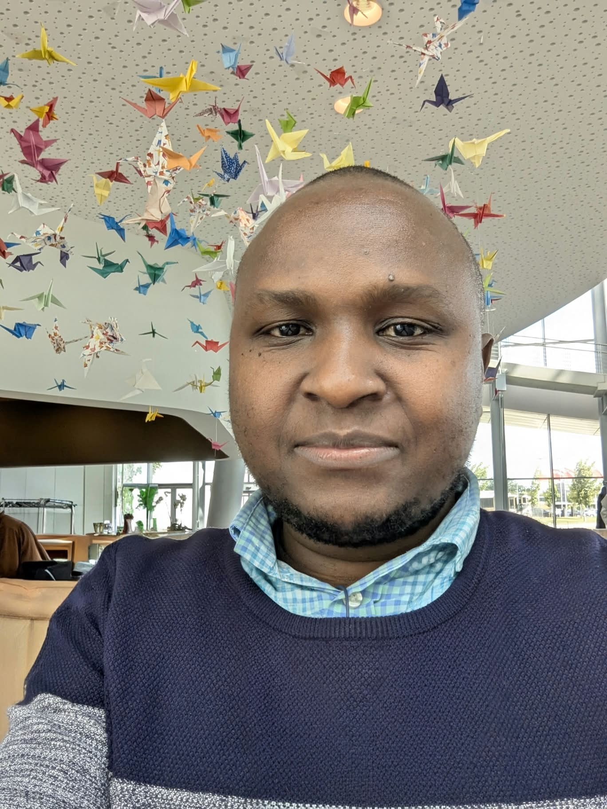
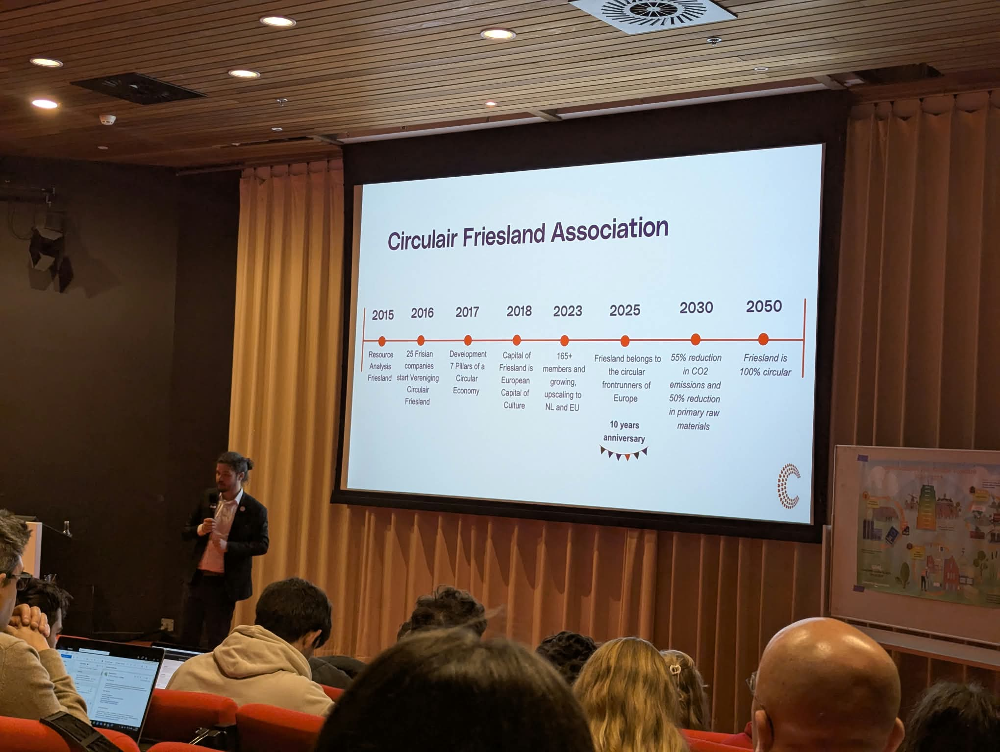
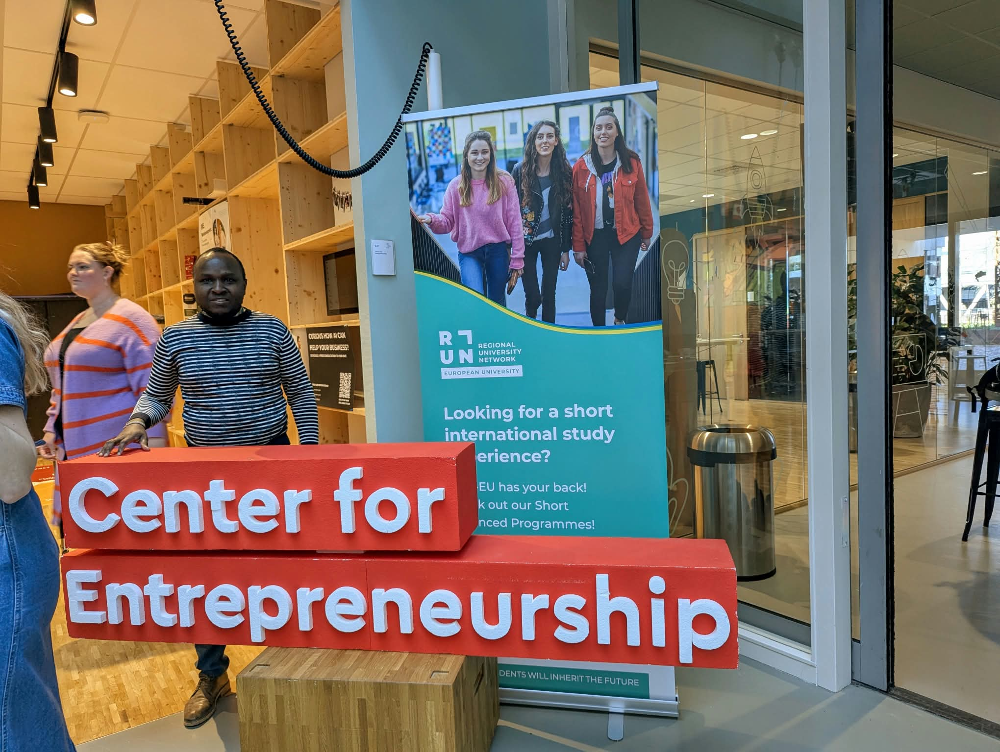

Treasury operations supported across a multi-entity asset base
SENIOR FINANCE · TREASURY · TRANSFORMATION
Finance that
connects capital,
control & change.
Rogers Mwenda CPA-K · CIFA
12+ years across accounting, financial reporting, treasury, investment management and finance transformation in regulated insurance.
A practical finance leader for permanent roles, interim assignments and project consulting—from group close and controls to FP&A, business partnering and transformation.
FINANCE LEADERSHIPBUSINESS PARTNERINGERP & PROCESS CHANGEESG & SUSTAINABLE FINANCE
Revenue of insurance business with liquidity activities managed
Premium-receipting matching efficiency supported by ERP integration
Years across insurance finance, treasury and reporting
01 / PROFILE
From reliable numbers
to better decisions.
I understand finance from the inside: the close, cash, controls, systems and people behind the report.
My career began in accounting and claims, grew into treasury and group finance, and expanded into investment reporting, ERP delivery, process improvement and ESG metrics. That range lets me work from operational detail up to funding decisions, governance and business performance.
I bring a regulated-insurance foundation and a clear transferable fit for manufacturing, consumer, food, logistics and other multi-entity environments that need financial control with an operating perspective.
02 / ASSIGNMENT PORTFOLIO
One finance foundation.
Multiple ways to add value.
Permanent · Interim · Fixed-term · Project-based
Across industries, locations and contract lengths
Financial control & reporting
Month-end, general ledger, reconciliations, accruals, balance-sheet substantiation, consolidation, audit coordination and dependable reporting.
Direct foundationControlling, FP&A & partnering
Budget and forecast support, actual-versus-plan analysis, KPI and cost insight, working-capital awareness, scenario thinking and practical business dialogue.
Strong transferable fitCash, liquidity & investment
Cash positioning, treasury reporting, intercompany funding, banking relationships, payment operations, investment performance and regional FX exposure.
Sector specialismERP, process & governance
Finance requirements, process maps, controls, Dynamics AX 2012 implementation, data validation, UAT, banking connectivity and stakeholder alignment.
Delivered change experienceInsurance finance consulting
Insurer-side perspective for finance diagnostics, process improvement, target operating models, automation opportunities and implementation that works in practice.
Consulting-ready bridgeOperational & commercial finance
Bring finance closer to production, supply chain, distribution and service teams—linking costs, working capital and performance data to operational decisions.
Transferable cross-sector fitWHERE THIS TRAVELSInsurance & financial servicesManufacturing & foodConsumer & retailLogistics & supply chainGreen enterprise & SME finance
03 / SELECTED IMPACT
Strategic scale.
Operational follow-through.
Capital events, policy, controls and systems—connected to day-to-day finance delivery.
01CAPITAL
€40M corporate bond refinancing
Contributed to a corporate refinancing transaction that reduced financing costs by 2.5%—bringing capital structure and funding cost into the treasury story.
02POLICY & RISK
Liquidity, investment & FX governance
Contributed to treasury policy reviews and governance frameworks; monitored liquidity, investment performance and regional FX exposures across a multi-entity group.
03TRANSFORMATION
Group-wide cashless and payment change
Supported “CIC Goes Cashless,” digital premium collection, Host-to-Host/API and SWIFT connectivity, and automated receipting linked to ERP—improving cash visibility and processing control.
04ERP DELIVERY
Finance lead for Dynamics AX 2012 integration
Represented Finance across GL, AP, AR, Cash & Bank and reporting; led process mapping and requirements workshops, coordinated data validation and UAT, and bridged Finance, IT and implementation partners.
05ESG & REPORTING
Embedded sustainability metrics into finance
Integrated ESG metrics into finance reporting in alignment with TCFD principles and liaised with the ESG Secretariat on departmental sustainability KPI monitoring.
04 / EXPERIENCE & LEARNING
Built in insurance.
Useful beyond it.
Direct financial-services depth, supported by international study and cross-industry operating exposure.
Treasury & Finance Operations Specialist
CIC Insurance Group · Multi-entity liquidity, cash management, intercompany funding, investment reporting, bank structures and treasury governance across a group with assets exceeding €425M.
Accountant — Treasury & Reporting
CIC Insurance Group · Liquidity operations for a €185M+ revenue business, treasury reporting, month-end, corporate refinancing contribution and premium-receipting automation.
Junior Accountant & Claims Analyst
CIC General Insurance · Financial reports, ledger, accruals, reconciliations, month-end support and claims analysis.
Post-Graduate Certificate, Global Business Management
HOWEST, Bruges · International business learning, including data-driven management and Power BI.
Operations in Belgium
Hands-on exposure to food production, retail and logistics, adding familiarity with frontline workflow, inventory, dispatch and ERP/WMS-driven operations.
05 / SUSTAINABILITY & ENTERPRISE
Capital for responsible growth.
Finance and sustainability meet in data, investment choices, enterprise capability and implementation.
TCFD-aligned reporting
Integrated ESG metrics into finance reports and supported monitoring of departmental sustainability KPIs with the ESG Secretariat.
Circular enterprise in Friesland
Short Advanced Programme in Green Growth: Circular Entrepreneurship in a Sustainable Society, with visits to Omrin, OPNIEUW! and Ekwadraat.
SME materials & circularity
Explored industrial symbiosis and scalable circular options for SME waste streams, including higher-value uses for timber offcuts, sawdust and defective panels.
Green SME access to finance
Developing a consulting focus on finance readiness, market links and inclusive capital access for enterprises in regenerative agriculture and the circular economy.
The profile separates delivered work and learning from the green-enterprise consulting direction now being developed.
06 / FIELD NOTES
Work, learning &
the places in between.
Three photo slots, ready for your portrait and selected moments.

PROFILE PORTRAITUpload assets/portrait.jpg
Rogers Mwenda · Profile portrait

CIRCULAR ENTERPRISEUpload assets/friesland-visit.jpg
Friesland · Circular enterprise field learning

PROFESSIONAL MOMENTUpload assets/professional-moment.jpg
Professional learning · Finance transformation
07 / LET’S TALK
Make finance
move the business.
For interim mandates, finance leadership, insurance transformation, treasury, reporting, FP&A or sustainable enterprise finance.